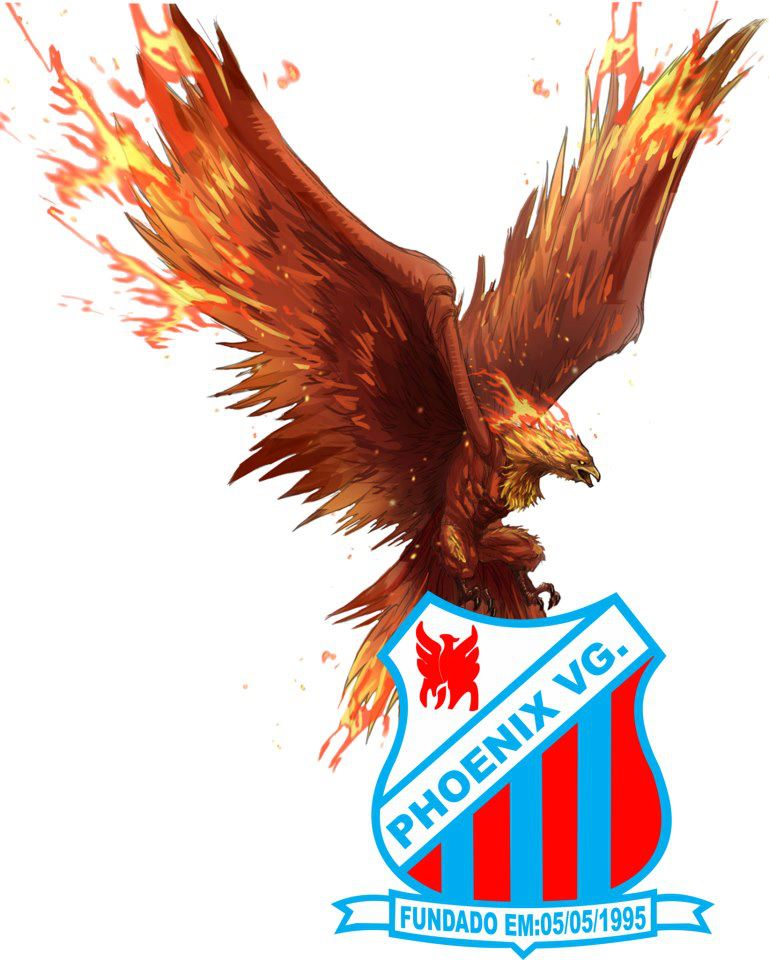
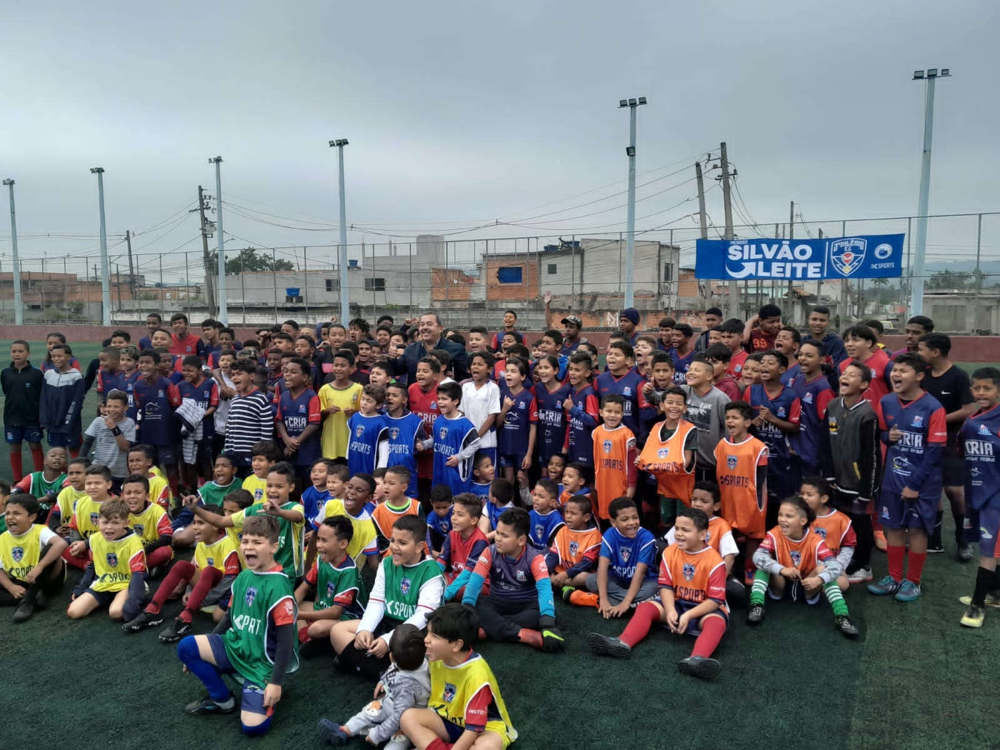

Quem nós somos?
Fundada em 1995, a Escolinha de Futebol Phoenix VG tem como missão desenvolver jovens talentos no esporte, promovendo não apenas habilidades técnicas, mas também valores como disciplina, respeito e trabalho em equipe. Localizada em [insira a localização], a escolinha atende crianças e adolescentes de diversas idades, proporcionando um ambiente seguro e acolhedor. Com uma equipe de treinadores qualificados e apaixonados pelo futebol, a Phoenix VG oferece treinamentos regulares, torneios e atividades sociais. A escolinha busca fomentar o amor pelo esporte, incentivando a prática saudável e o crescimento pessoal dos alunos. Ao longo dos anos, a Phoenix VG se consolidou como referência na formação de jovens atletas, contribuindo para o desenvolvimento do futebol na região e preparando os jogadores para desafios tanto dentro quanto fora de campo.

A Associação PHOENIX VG nasceu com um propósito de transformar vidas através do esporte. Desde a nossa fundação, acreditamos no poder do futebol como uma ferramenta de inclusão social e mudança. Nossa missão é tirar meninos da vulnerabilidade das ruas e oferecer a eles um caminho de desenvolvimento, longe das drogas e da violência. Mais do que uma simples escolinha de futebol, somos uma família que acredita na educação e nos valores do esporte para formar não apenas atletas, mas cidadãos conscientes e comprometidos com o futuro. Aqui, cultivamos o respeito, a disciplina, a dedicação e o trabalho em equipe. Cada treino, cada partida, é uma oportunidade de aprendizado e crescimento pessoal.

Para obter recursos para investir em equipamentos e cobrir custos operacionais, utilizamos o dinheiro arrecadado por meio de doações ou do aluguel da quadra durante os horários disponíveis.
Alunos não pagam nada.
Nossa organização conta com técnicos e auxiliares formados e com grande experiência no mercado. Esses serão responsáveis pelo desenvolvimento de cada jogador do nosso clube.
Para se inscrever, vá até a aba de inscrição, escolha uma das datas da peneira e preencha o formulário.
Conheça nosso time
Nossa localização
Campo da 17
R. Ipê Roxo, 746-918 - Colônia (Zona Sul), São Paulo - SP, 04896-360
Utilize o mapa abaixo.